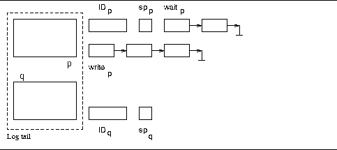

The current implementation uses a single page for the log tail and locks the entire shared memory structure while performing any operation. This considerably reduces concurrency. Since log record writes are in the critical path of every update (i.e., every update operation has to log its update), maximizing concurrency is crucial.
This section outlines an alternate, more complex design for the log manager that considerably increases the concurrency.
Concurrency can be enhanced if we reduce the size of the critical section to encompass just the assigning of LSNs. Writing on the log tail page can proceed concurrently because the writes are to non-overlapping portions of the page (the mutual exclusion of assignment of LSNs guarantees this). The scheme is more complicated because we no longer know when a page can be flushed. Also, since LSN assignments proceed at a faster rate, we have to ensure that the page for a log write is in the log tail before allowing the write to proceed. This raises the question of what should be done if the page is not in the log tail.
We propose the following solution to tackle these problems.
We assume double buffering, i.e., two log tail pages such that when
one is being flushed to disk, the other can be filled by log writes.
Associated with each log tail page is the page ID in the log file it
corresponds to. Each page ID is protected by a semaphore. We denote
the page ID corresponding to log tail page p as ID and
the semaphore as sp
and
the semaphore as sp . Figure 3
illustrates the configuration.
. Figure 3
illustrates the configuration.

Figure 3: The design for enhancing concurrency. Each page in the log
tail has the page ID of the log file that it corresponds to. Each
page ID is protected by a semaphore. wait is the list of
processes (transactions) waiting for the page ID, ID
is the list of
processes (transactions) waiting for the page ID, ID , to
change. write
, to
change. write is the list of transactions that have been
assigned LSNs for page p but not yet written their records.
is the list of transactions that have been
assigned LSNs for page p but not yet written their records.
Let us walk through a typical set of log writes. Initially,
both buffers are empty. ID is 0, ID
is 0, ID is 1. Every
log write goes through a critical section for assignment of LSN. Let
the first five log records get LSNs assigned in page 0. All five of
these can now concurrently write to page 0. Every time an LSN is
assigned for a log write to page ID
is 1. Every
log write goes through a critical section for assignment of LSN. Let
the first five log records get LSNs assigned in page 0. All five of
these can now concurrently write to page 0. Every time an LSN is
assigned for a log write to page ID , an entry is made in
write
, an entry is made in
write . When the corresponding memcpy to the log tail
succeeds, the entry is removed.
. When the corresponding memcpy to the log tail
succeeds, the entry is removed.
When the sixth log write request arrives, the LSN assignment
code detects that a page change has occurred . Thus, no more log writes to page
ID
. Thus, no more log writes to page
ID occurs. This is made note of. Now, when write
occurs. This is made note of. Now, when write becomes empty, the flusher can be invoked.
becomes empty, the flusher can be invoked.
The flusher will check whether another flusher is active for
page q. If so, it waits until that flush completes. It will
then start writing the page to disk. Since write is empty,
it is guaranteed that no further updates to page ID
is empty,
it is guaranteed that no further updates to page ID will be
made. (Flushers can check whether other flushers are active by having
semaphores per log tail page that are downed and uped by
the flushers only.)
will be
made. (Flushers can check whether other flushers are active by having
semaphores per log tail page that are downed and uped by
the flushers only.)
Meanwhile, LSN assignments and log writes will continue in the
page ID . Suppose that log writes to page ID
. Suppose that log writes to page ID are
completed. No further log writes can occur because the page
ID
are
completed. No further log writes can occur because the page
ID is still being flushed. This is detected by writers because
LSN.pageID ID
is still being flushed. This is detected by writers because
LSN.pageID ID . When a transaction detects this, it adds
itself to wait
. When a transaction detects this, it adds
itself to wait and goes to sleep. (Because of double
buffering, each transaction will know which buffer it will write to
eventually.)
and goes to sleep. (Because of double
buffering, each transaction will know which buffer it will write to
eventually.)
When the flusher is done with page ID , it will
down(sp
, it will
down(sp ), update ID
), update ID and up(sp
and up(sp ). Finally, it
will wake up all processes in wait
). Finally, it
will wake up all processes in wait . These transactions will
again check LSN.pageID against ID
. These transactions will
again check LSN.pageID against ID before proceeding
with the log write.
before proceeding
with the log write.
Not much can be gained by increasing the number of buffers, because, finally, a new buffer can be written to only after it has been flushed. Double buffering with the above strategy is likely to give good concurrency.